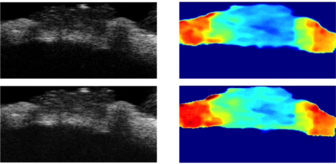
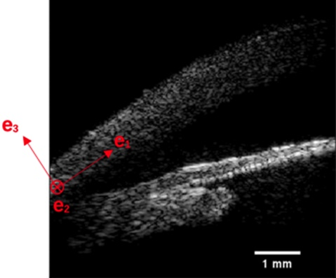
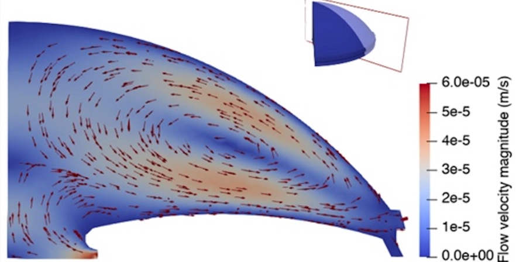
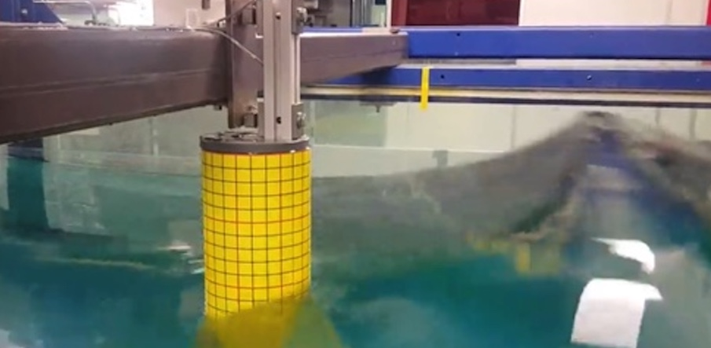
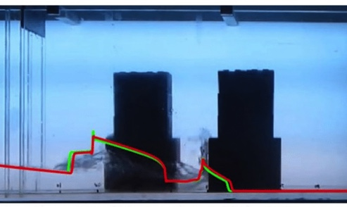
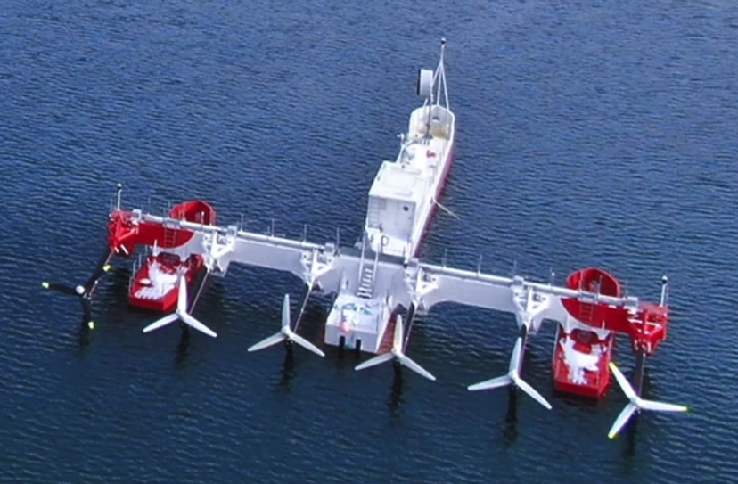
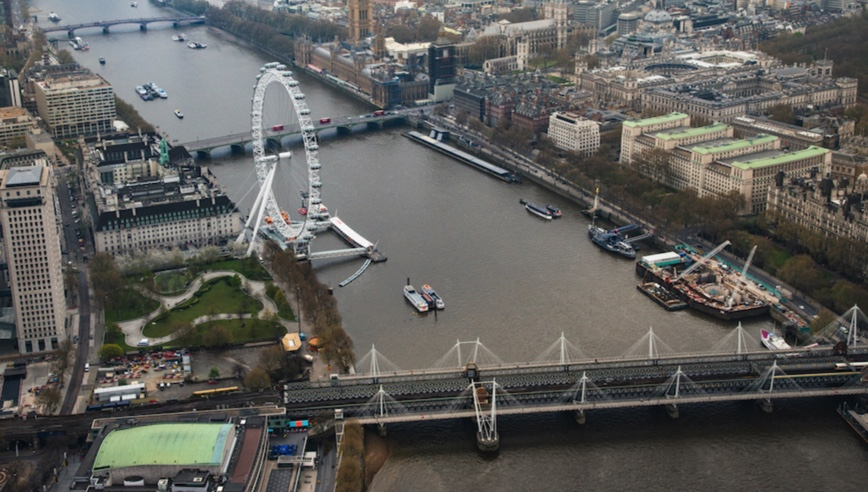
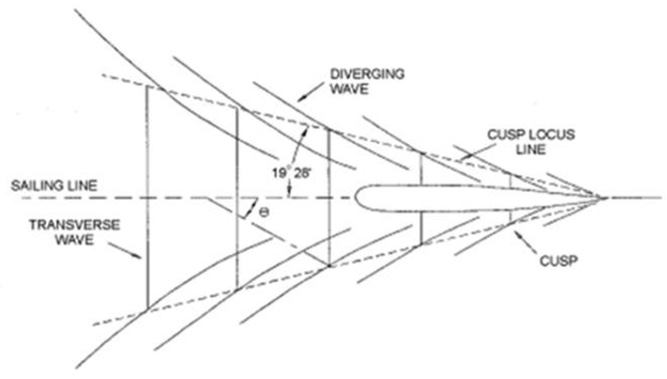
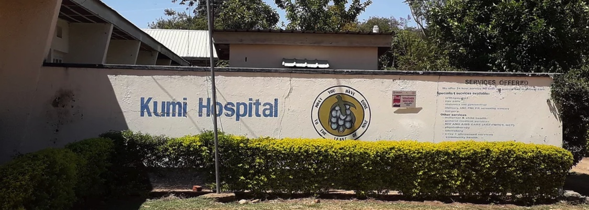

Conditional GANs for ultrasound imaging
We are using conditional GANs to solve the inverse elasticity problem present when imaging the biomechanical properties of the optic nerve head.
Ph.D. student in Mechanical Engineering at University of Southern California

We are using conditional GANs to solve the inverse elasticity problem present when imaging the biomechanical properties of the optic nerve head.

We characterize the hyperelastic behavior of the cornea using a simple hyperelastic model and shear wave velocity measurements.

We study the correlation between anterior chamber angle-closure and intraocular pressure to help understading angle-closure glaucoma.

Experimental study where we generated wave groups representing rogue ocean waves and measure the forces that they imposed on a cylinder.

We developed a 1D model to quickly estimate tsunami bore propagation through buildings by using the Saint-Venant equations.

As part of London Marine Consultants I worked on the design of the mooring turret for SME's floating tidal energy harvesting system PLAT-I.

As part of AECOM's Ports and Marine team in London (UK), I worked on river structures that protected critical infrastructure.

As part of AECOM's Ports and Marine team in London (UK), I worked on assessing wave overtopping from vessel generated waves in waterways.
